Comunidad Soto Zen Camino Medio
www.caminomedio.org
Inicio - Home
- Eventos destacados
- Actividades
- Entradas del blog
Comunidad
- Presentación de la comunidad
- Centros de práctica
- Financiación
- Compromiso ético
Agenda
- Próximas actividades
- Calendario 2025
- Actividades Anteriores
Dharma Digital
- Círculo de Práctica-Estudio
- Biblioteca
- Audioteca
- Dokusan
- Glosario
- Blog
- Cursos en línea
- Programa de Práctica-Estudio
Sangha Online
- Espacio de Encuentro (red social interna y grupos)
- Horarios de zazen online y presencial
- Zona para miembros
Alta como miembro
- Tipos de membresías
- Simpatizantes
- Círculo de Práctica-Estudio
- Benefactores
- Confirmar dirección de correo
- Recuperar contraseña
Programa de Práctica-Estudio 2025
- Calendario anual presencial y online
- Formación continua en comunidad
- Guía paso a paso
Resultados de la Campaña de Apoyo a la Creación de la CSZCM
- Consolidación de la comunidad
- Registro en el RER como entidad religiosa
- Apoyo a practicantes con dificultades económicas
- Soporte informático con software libre